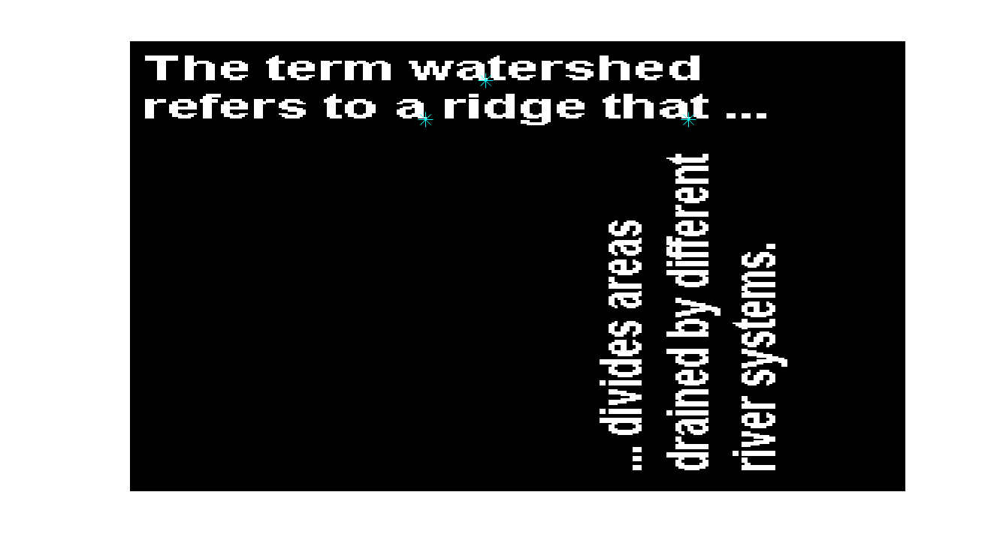

%========================== % Name: hw8_1.m % % Author: Kairi Kozuma %========================== %================================ runmatch =============================== % % Loads the template image and the image data from file, then invokes the % template matching algorithm to find the instance of that template in % the image. % %================================ runmatch =============================== load('template.mat'); % Should be in your path. [xpts, ypts] = tmatch(I, tI); fh = figure(1); clf; imagesc(I); colormap('gray'); hold on; plot(xpts, ypts,'c*','MarkerSize',10); hold off; axis off; fprintf('The template matches the lower-right corner of the lowercase letter a\n'); fprintf('It would be better if the function could return the positions\n'); fprintf('of the rotated letter a`s in the picture.\n'); %================================= tmatch ================================ % % Performs cross-correlations using xcorr2 to find a template image % in another image. Then retuns the points that are above 0.9 times the % peak value of the cross-correlation. The image and template must be % grayscale. % % [xpts, ypts] = tmatch(I, tI) % % %================================= tmatch ================================ % % Name: tmatch.m % % Author: Patricio A. Vela, pvela@ece.gatech.edu % % Created: 01/19/2006 % Modified: 01/19/2006 % % Notes: % Matlab's find function should be useful. % don't forget that (x,y) coordinate are not the same as (i,j) image % coordinates. % % You should be able to run the following and have it work: % > [xp, yp] = tmatch(I, ti); % > imagesc(I); % > colormap('gray'); % > hold on; % > plot(xp, yp, 'r+', 'MarkerSize', 10'); % > hold off; % %================================= tmatch ================================ % function [xpts, ypts] = tmatch(I, tI) % % % Do cross correlation % xc = xcorr2(I, tI); % % % Find peak and threshold value % peak = max(max(xc)); % thresh = 0.9*peak; % [ipts, jpts] = find(xc > thresh); % % % Change I,J to X,Y coordinates % xpts = jpts; % ypts = ipts; % % end
The template matches the lower-right corner of the lowercase letter a It would be better if the function could return the positions of the rotated letter a`s in the picture.